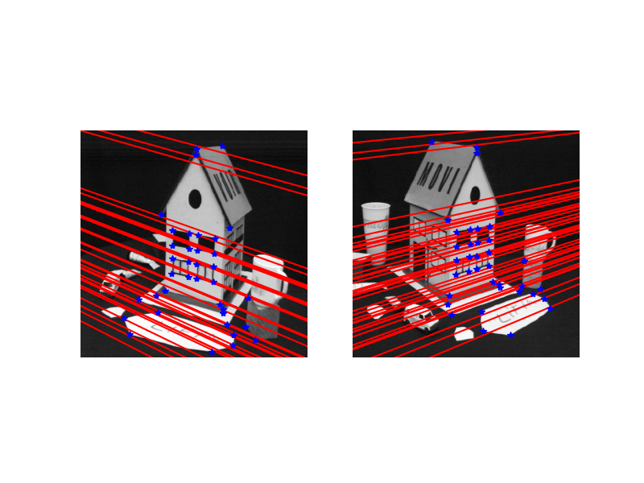
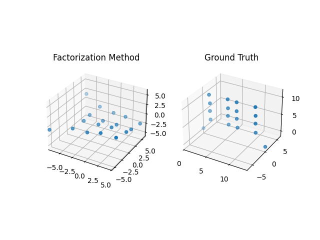

Assignment 4 · Multi-view geometry
From image matches to 3D structure
Four steps connect corresponding image points to camera geometry: estimate the fundamental matrix, rectify a stereo pair, factor an affine measurement matrix, and triangulate a multi-view statue reconstruction.
Part 1 · Fundamental matrix
Correspondences constrain epipolar lines
For matched homogeneous points, the fundamental matrix satisfies
p2.T @ F @ p1 = 0. I formed the eight-point design matrix, solved its least-squares
nullspace with SVD, and set the smallest singular value of F to zero. The normalized
version first translates each point set to its centroid and scales its mean distance to
sqrt(2), then denormalizes the estimated matrix.
| Data set | Method | Image 1 mean distance | Image 2 mean distance | Maximum |p2.T F p1| |
|---|---|---|---|---|
| set1 | LLS | 28.03 px | 25.16 px | Not recorded |
| set1 | Normalized | 0.89 px | 0.83 px | 0.2066 |
| set2 | LLS | 9.70 px | 14.57 px | Not recorded |
| set2 | Normalized | 0.89 px | 0.89 px | 2.9200 |
The point-to-line distances are average perpendicular distances in pixels. Normalization greatly improves the estimates on both sets. The algebraic residual is scale-dependent and is not a pixel error.
Fundamental matrices (full precision)
set1 · LLS
[[ 1.55218081e-06, -8.18161523e-06, -1.50440111e-03],
[-5.86997052e-06, -3.02892219e-07, -1.13607605e-02],
[-3.52312036e-03, 1.41453881e-02, 9.99828068e-01]]set1 · normalized
[[ 4.45505557e-06, -3.63935568e-05, 6.03119338e-04],
[-3.35055836e-05, -2.32218046e-06, -4.39148773e-02],
[-5.84762546e-03, 6.03085864e-02, 9.97195967e-01]]set2 · LLS
[[-5.63087200e-06, 2.74976583e-05, -6.42650411e-03],
[-2.77622828e-05, -6.74748522e-06, 1.52182033e-02],
[ 1.07623595e-02, -1.22519240e-02, -9.99730547e-01]]set2 · normalized
[[-1.33351218e-05, 2.22048310e-04, -1.37802168e-02],
[ 3.20320025e-04, 2.83731330e-05, 6.19621780e-01],
[ 2.08672226e-02, -7.52241693e-01, -2.22656232e-01]]



Part 2 · Image rectification
Make corresponding epipolar lines horizontal
The epipoles are the null vectors of F.T and F. To construct the second
image homography, I translate the image center to the origin, rotate the epipole onto the horizontal
axis using the sign factor alpha, and apply a projective transform that sends it to
infinity. I then use the point correspondences to solve the remaining matching-homography parameters
with least squares.
For set1, the epipoles are approximately e1 = (-1300.79, -142.66, 1) and
e2 = (1654.22, 45.43, 1). In a shared rectified coordinate frame, corresponding points
have a mean vertical difference of 0.86 px (maximum 3.87 px); the
transformed fundamental matrix has the expected horizontal-epipolar form.

Part 3 · Factorization
Recover affine shape and camera motion
I center the four-row measurement matrix and retain its leading three singular components to obtain a rank-three motion/structure factorization. The metric upgrade estimates a positive-definite metric from orthographic row constraints with a weak isotropic prior. For the sparse subset, those constraints become ill-conditioned, so the implementation retains the rank-three factorization instead of applying an unstable upgrade. Reconstructions can differ from ground truth by scale and rotation; fewer correspondences also make the subset less stable.
| Correspondence set | Centered measurement-matrix singular values |
|---|---|
| set1 (37 points) | 959.5852, 540.4761, 184.4317, 27.9152 |
| set1 subset (18 points) | 264.5440, 210.0607, 7.2192, 5.1286 |
The ideal affine orthographic measurement matrix has rank three, so its fourth singular value is zero. Here it is nonzero because the measured points contain noise and the real camera motion is not perfectly affine/orthographic. In the subset, the third and fourth singular values are both much smaller relative to the first two, reflecting the loss of geometric information.



Part 4 · Structure from motion
Choose camera pose, triangulate, refine
The essential matrix gives four candidate rotation/translation pairs. I triangulate each match under each candidate and select the pose with the most points at positive depth in both camera frames. A linear DLT estimate initializes Gauss–Newton refinement of the reprojection error.
| Check | Result |
|---|---|
| Linear 3D point difference from expected point | 0.00292 (sum of absolute coordinate differences) |
| Reprojection-error implementation difference | 8.30 × 10-7 |
| Jacobian implementation difference | 1.82 × 10-8 |
| Unit-test reprojection error, linear estimate | 98.74 |
| Unit-test reprojection error, nonlinear estimate | 95.59 |

A larger scene such as a house is harder because it needs more overlapping views and reliable tracks across a wider range of viewpoints. Occlusion, repeated textures, viewpoint and scale changes, and accumulated camera-pose error can all produce mismatches or drift. More cameras and points also make triangulation and bundle adjustment more computationally demanding.
Takeaway
Geometry links local matches to global shape
Epipolar constraints reduce correspondence search to a line; rectification makes that line horizontal. Factorization recovers an affine approximation from multiple views, while calibrated projective cameras and triangulation recover a more complete 3D structure. Each step depends on the quality and consistency of the image correspondences.
References & implementation
- SYDE 671 Assignment 4, adapted from Stanford CS231A.
- Tomasi and Kanade, “Shape and Motion from Image Streams under Orthography: a Factorization Method.”
- Hartley and Zisserman, Multiple View Geometry in Computer Vision.